数値
NUMBER · 数値入力欄 (範囲 · 小数桁数 · 単位 · 自動計算)
数値フィールドとは
- 1.1フィールドの追加と属性パネルの構成
1.1フィールドの追加と属性パネルの構成
概要
数値(NUMBER) は数値を入力する欄です。身長 · 体重 · 検査値のように大小を比較したり計算に使ったりする値に使用します。テキストタイプと異なり入力可能な範囲 · 小数桁数 · 単位を指定でき、他のフィールドの値から自動計算することもできます。数字のように見えても計算しない値(検体番号 · 電話番号など)は単一行テキストの方が適しています — 先頭の 0 が消えるためです。
画面説明
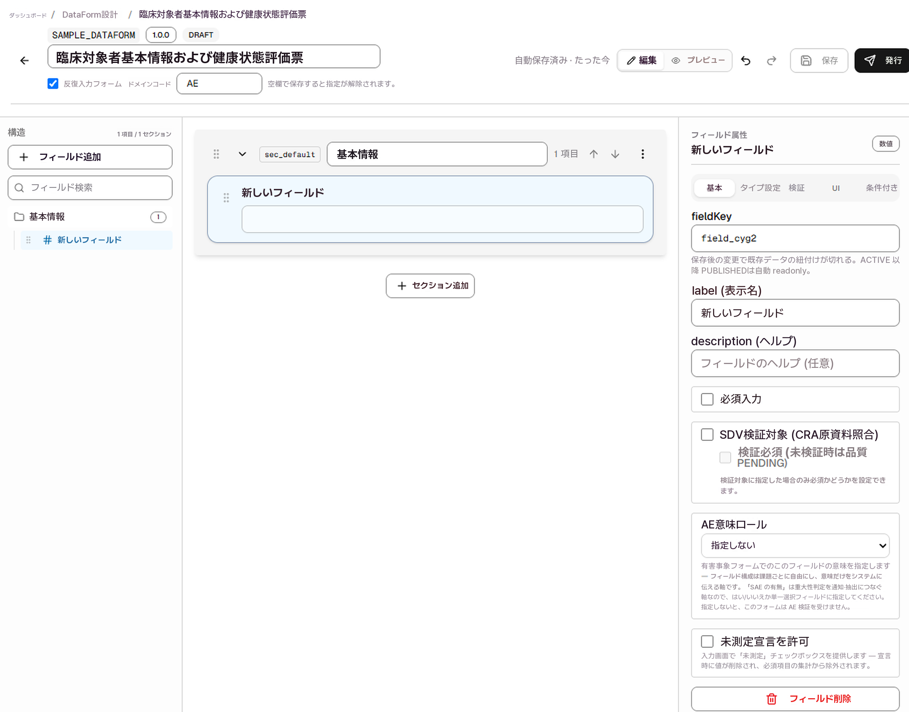
[+ フィールド追加] — ここでタイプを指定するとフィールドが作成されます。
構造ツリーに新しいフィールドが追加されます。(数値を表す # アイコンで表示されます)
WYSIWYG キャンバスに入力欄が表示されます。キャンバスは入力画面のプレビューなので、設定を変更するとすぐに反映されます。
fieldKey — 値が保存される実際のキーです。自動計算でこのフィールドを参照するときに使う名前でもあります。2.1 · 3.4
label (表示名) · description (ヘルプ) — 画面に表示される名前と補足説明です。2.1
必須入力 · SDV検証対象 · AE意味ロール · 未測定宣言を許可 — 2章で一つずつ説明します。
タイプバッジ — 選択したフィールドのタイプです。追加した後は変更できません。
属性タブ 5種 — 基本 · タイプ設定 · 検証 · UI · 条件付き。このマニュアルの2~6章が各タブに対応します。
注意事項
必須確認 データ破損 · フォーム完了不可
- • タイプは追加した後に変更できません。誤って選択した場合は、フィールドを削除して再度追加してください。(テーブル型 · フィールドグループの下位項目のみ例外としてタイプを変更できます。)
- • 先頭に 0 が必要な値には数値タイプを使用しないでください。
007は7として保存されます。検体番号 · 被験者番号のように桁数が意味を持つ値は、単一行テキストに正規表現を設定する方が安全です。 - • 発行(PUBLISH)後は構造を変更できません。運用中に修正が必要な場合は、新しいバージョンを発行してください。
誤解しやすい動作
- • 設定を変更すると、上部に「変更を検出 — 自動保存待ち」が表示されます。しばらくすると自動保存されます。[保存] を選択してすぐに保存することもできます。元に戻す操作は
Ctrl+Zです。
基本タブ — 名前 · 必須 · 検証対象 · 未測定
- 2.1fieldKey · 表示名 · ヘルプ
- 2.2必須入力
- 2.3SDV検証対象 (CRA原資料照合)
- 2.4未測定宣言を許可
2.1fieldKey · 表示名 · ヘルプ
概要
フィールドの名前を決める領域です。保存キー(fieldKey)と画面に表示される名前(label)は別々の値であり、変更してよいタイミングが異なります。
画面説明
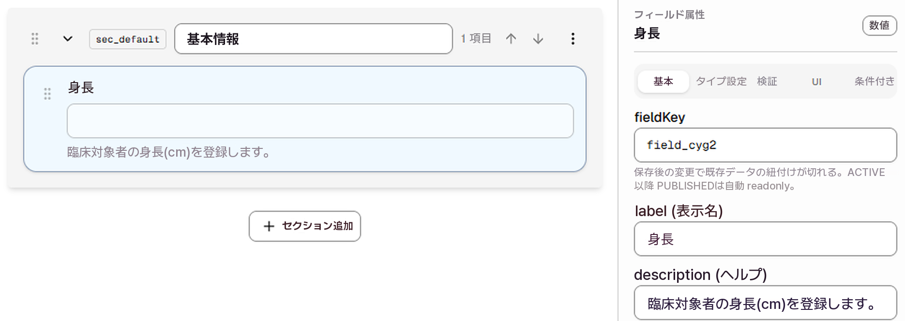
label (表示名) — 入力画面に表示する項目名を入力します。
キャンバスのフィールドタイトルとして表示されます。
description (ヘルプ) — 表示名の下に表示する補足説明を入力します。空欄にすると表示されません。
入力欄の下にグレーの文字で表示されます。
fieldKey — 値が保存される実際のキーです。フィールドを追加すると field_cyg2 のように自動で付与され、英字 · 数字 · アンダースコアで変更できます。画面には表示されません — 下記の注意事項を必ず確認してください。
注意事項
必須確認 データ破損 · フォーム完了不可
- • ⛔ 保存した後は fieldKey を変更しないでください。画面の案内のとおり「保存後の変更で既存データの紐付けが切れる」 — すでに入力された値が新しいキーと結び付かず、事実上失われます。
- • ⛔ 自動計算で参照中のフィールドの fieldKey を変更すると、計算式が壊れます。計算式は
{fieldKey}で結び付いているため、名前を変えると参照が切れて結果が空になります。3.4 - • フォームが ACTIVE 以降 PUBLISHED 状態になると、fieldKey 入力欄は自動で読み取り専用になります。システムが変更を防ぐのはそれ以降なので、それまではユーザー自身が注意する必要があります。
誤解しやすい動作
- • 計算に使うフィールドは、fieldKey を読みやすく付けておいてください。
height·weightのように意味が分かると、計算式を読んで確認しやすくなります。ただし、保存前に決める必要があります。
2.2必須入力
概要
この項目を必ず入力する必要があるかを決めます。選択すると、入力画面で値が空のときに保存がブロックされます。
画面説明
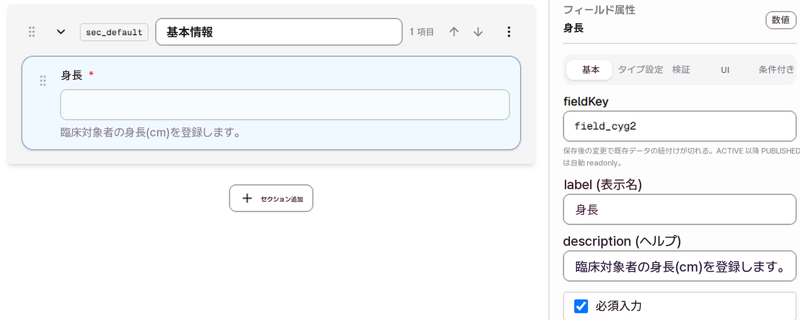
必須入力 — 選択すると、このフィールドが必須になります。
キャンバスの表示名の右に赤いアスタリスク(*)が表示され、ユーザーに必須であることを知らせます。
注意事項
必須確認 データ破損 · フォーム完了不可
- •
0は空の値ではありません。0 を入力すると値があるものとして処理され、必須条件を満たします。「測定したが 0」と「測定していない」を区別する必要がある場合は、「未測定宣言を許可」を使用してください。2.4 - • 条件付き表示で非表示になったフィールドは、必須検証が免除されます。6章 一方、UIタブの非表示は除外されないため、混同しないでください。5.3
誤解しやすい動作
- • 自動計算フィールドは、必須に指定しても必須集計から自動で除外されます — ユーザーが入力できない欄だからです。あえて選択する必要はありません。3.4
参考
- • 必須かどうかはフォーム完了判定に使用されます。必須項目が空の場合、そのフォームは完了として集計されません。
2.3SDV検証対象 (CRA原資料照合)
概要
SDV(Source Data Verification) は、臨床開発モニター(CRA)が入力値を医療機関の原資料と照合する手順です。このフィールドをその対象に指定するかどうかを、ここで決めます。この設定はすべてのフィールドタイプで共通なので、画面もタイプに関係なく同じです。
画面説明


SDV検証対象 (CRA原資料照合) — 選択すると、このフィールドが CRA の照合リストに含まれます。
選択状態に変わると、下位項目が有効になります。
検証必須 (未検証時は品質 PENDING) — ①を選択した後でなければ指定できません。選択すると、CRA が照合を終えるまで、そのデータの品質ステータスが PENDING のままになります。
①を選択する前は、②が薄く表示されて無効です。画面の案内のとおり「検証対象に指定した場合のみ必須かどうかを設定できます。」
注意事項
必須確認 データ破損 · フォーム完了不可
- • 値が変更されると検証が解除されます。すでに VERIFIED のフィールドの値を修正すると、品質ステータスが PENDING に戻り、CRA が再度照合する必要があります。
誤解しやすい動作
- • SDV は入力した本人が実施することはできません。システムがクロス検証(Cross-User SoD)を強制するため、入力者と検証者は必ず別の人である必要があります。
- • 自動計算フィールドは SDV 対象に指定する必要はありません。値が原資料ではなく他のフィールドから算出されるためです — 照合すべきなのは参照先のフィールド(例: 身長 · 体重)です。3.4
参考
- • 品質ステータスは PENDING → VERIFIED → CLEAN の順に進みます。検証必須に指定したフィールドが一つでも未検証であれば、そのデータは CLEAN になりません。
- • すべてのフィールドを SDV 対象に指定すると、モニタリングの負担が急激に増加します。主要評価項目 · 安全性項目を中心に指定してください。
2.4未測定宣言を許可
概要
検査を実施できなかった場合を値として区別して記録する機能です。数値項目では特に重要です — 空欄のままにすると「まだ入力していない」と「測定していない」を区別できず、0 を代わりに入れると測定値 0 と混ざって統計が歪みます。
画面説明

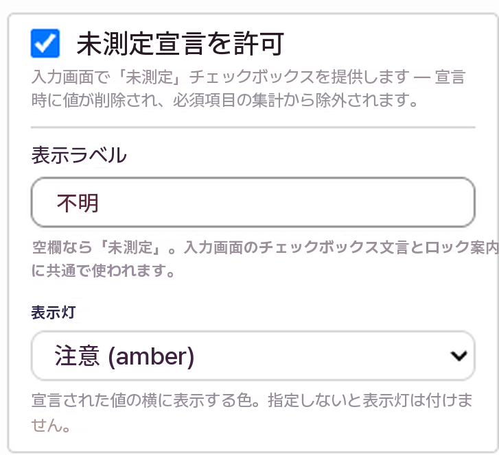
未測定宣言を許可 — 選択すると、入力画面に「未測定」チェックボックスが作成され、下の二つの項目が表示されます。
表示ラベル — 空欄にすると、デフォルト値「未測定」が適用されます。
不明 に変更すると、この文言が入力画面のチェックボックスとロック案内の両方に適用されます。
表示灯 — デフォルト値はなしです。
注意(amber) に変更すると、宣言された値の横にその色の表示が現れます。
注意事項
必須確認 データ破損 · フォーム完了不可
- • ⛔ 未測定を 0 で代用して記録しないでください。0 は有効な測定値なので、平均 · 最小値の計算にそのまま含まれます。この宣言こそ、その混同を防ぐための機能です。
- • 宣言すると値が削除されます。画面の案内のとおり — 「宣言時に値が削除され、必須項目の集計から除外されます。」 入力済みの内容がある場合は削除されるため、ユーザーに事前に案内してください。
誤解しやすい動作
- • 宣言されたフィールドは必須集計から除外されます。そのため、必須項目であってもフォームを完了できます。
- • 未測定として宣言されたフィールドを参照する自動計算は、結果が空になります。参照値がない場合、計算結果は空の値のまま残ります — 保存が失敗することはありません。3.4
参考
- • 表示灯を指定しないと、色の表示は適用されません。強調が必要な場合は、注意(amber) などを選択してください。
タイプ設定タブ — 数値入力規則
- 3.1タイプ設定タブの全体構成
- 3.2入力範囲 (min · max · 境界を含む)
- 3.3小数桁数 · 単位 (decimalPlaces · unit)
- 3.4自動計算 ① — 計算式の指定
- 3.5自動計算 ② — 計算タイミング · 小数桁数
- 3.6デフォルト値 (defaultValue)
3.1全体構成
概要
数値フィールドの入力規則を決めるタブです。テキストタイプの長さ · 正規表現の代わりに、値の範囲 · 小数桁数 · 単位を扱います。ここで指定した値は保存時にシステムが再度チェックするため、画面上で案内するだけの文言ではなく、実際のブロック条件です。
画面説明
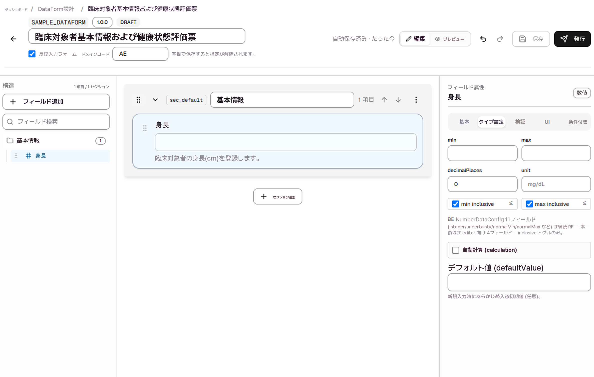
min · max — 入力可能な最小値と最大値です。3.2
decimalPlaces · unit — 許可する小数桁数と表示する単位です。3.3
min inclusive · max inclusive — 境界値そのものを許可するかどうかを決めます。デフォルト値は両方とも選択(以上 · 以下)です。3.2
画面の案内 — この画面で提供される項目は四つ(min · max · decimalPlaces · unit)と境界トグル二つです。整数のみ · 測定誤差 · 正常範囲のような項目は、この画面では設定しません。(下記の注意事項参照)
自動計算 (calculation) — 他のフィールドの値でこの欄を自動的に埋めます。3.4
デフォルト値 (defaultValue) — 新規入力時にあらかじめ入力しておく値です。3.6
注意事項
必須確認 データ破損 · フォーム完了不可
- • min · max は「ブロック」の軸です。範囲外の値は保存されません。一方、正常範囲を外れたときに警告だけを表示する機能(正常値の強調)は、この画面にはありません — 検査値の正常範囲の強調が必要な場合は、数値タイプではなく検査パネル系のフィールドで設計してください。
- • decimalPlaces の初期表示値
0は「小数点なしで整数のみ」を意味します。小数が必要な項目であれば、必ず桁数を指定してください。3.3
誤解しやすい動作
- • 入力欄に薄く表示される
mg/dLは入力例(placeholder)であり、設定された値ではありません。空欄の場合、単位は表示されません。
参考
- • min が max より大きい場合、保存は拒否されます。両方の値を合わせて確認してください。
- • すべての項目は任意です。何も設定しないと、範囲 · 桁数の制限がない自由な数値入力欄になります。
3.2入力範囲 (min · max · 境界を含む)
概要
入力できる値の範囲を決めます。範囲外の値は保存段階でブロックされます。二つの項目は互いに独立しているため、片方だけ入力しても機能します。
画面説明
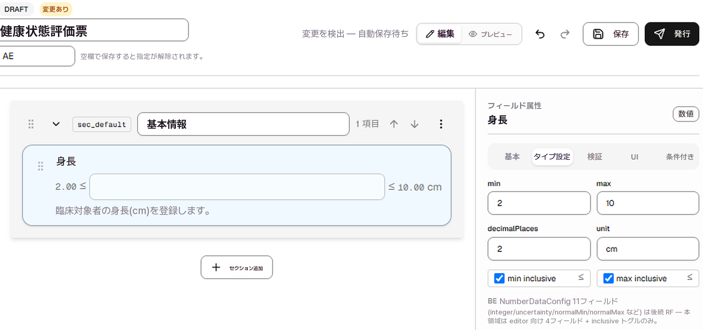
min — 入力可能な最小値です。
max — 入力可能な最大値です。
min inclusive · max inclusive — 境界値そのものを許可するかどうかを決めます。選択すると以上 · 以下(≥ ≤)、解除すると超 · 未満(> <)になります。デフォルト値は選択です。
①~③の結果 — キャンバスの入力欄の左右に範囲が一緒に表示されます。キャプチャは 2.00 ≤ □ ≤ 10.00 なので、2 と 10 を含みます。ユーザーは入力前に許容範囲をすぐに確認できます。
注意事項
必須確認 データ破損 · フォーム完了不可
- • 境界値を含めるかどうかは、臨床的に決める必要があります。例えば「収縮期血圧 90 以上」と「90 超」では、90 の被験者を含むかどうかが分かれます。プロトコルの文言をそのまま反映してください。
- • 範囲制限は入力そのものを防ぐ条件です。正常値を外れていても記録は残すべき値(異常値)まで防がないよう、生理的に不可能な範囲を基準に余裕を持って設定する方が安全です。
- • すでに運用中のフォームで範囲を狭めると、既存データが新しい制限に違反した状態で残ることがあります。その値は再度保存するときにブロックされるため、発行後の縮小は慎重に判断してください。
誤解しやすい動作
- • 片方だけ設定しても構いません — 上限だけを適用する場合は、max だけを入力してください。
- • 検証タブの「値の範囲」規則4.2も同じチェックを行います。違いは、違反時に表示する文言を直接指定できる点です。
境界を含むかどうか
| 設定 | 表示 | 意味 | 2 を入力すると |
|---|---|---|---|
| min inclusive 選択 | 2 ≤ | 2 以上 | 通過 |
| min inclusive 解除 | 2 < | 2 超 | ブロック |
| max inclusive 選択 | ≤ 10 | 10 以下 | (10 入力時) 通過 |
| max inclusive 解除 | < 10 | 10 未満 | (10 入力時) ブロック |
3.3小数桁数 · 単位 (decimalPlaces · unit)
概要
値をどの桁まで受け付けるかとどの単位かを決めます。どちらの項目も、入力画面の表示と保存規則に直接影響します。
画面説明

decimalPlaces — 許可する小数桁数です。キャプチャの 2 は、小数点以下二桁まで受け付けるという意味です。0 の場合は整数のみ許可します。
unit — 入力欄の右に表示する単位です。キャプチャは cm です。単位は表示用であり、値には保存されません — データには数値だけが入ります。
①②の結果 — キャンバスの範囲表示が 2.00 · 10.00 のように指定した桁数にそろえられ、入力欄の右端に単位 cm が固定で表示されます。
注意事項
必須確認 データ破損 · フォーム完了不可
- • ⛔ 単位を変更するときは、すでに保存された値を必ず確認してください。単位は表示上の文言にすぎないため、
kgをgに変えても既存データは換算されません。同じ欄に単位の異なる値が混ざると、元に戻せません。 - • 単位は必ず指定してください。指定しないと、ユーザーが cm と m、kg と g を混在させて入力することになります。プロトコルで定めた単位一つに固定するのが原則です。
- • 小数桁数を減らすと精度が失われます。体温のように小数一桁が臨床的に意味を持つ項目で
0にすると、36.8 を記録できません。
誤解しやすい動作
- • 自動計算結果の小数桁数は、この値ではなく計算式の precision で別途決めます。3.5
3.4自動計算 ① — 計算式の指定
概要
他のフィールドの値でこの欄を自動的に埋める機能です。体重と身長から BMI を求めるような派生値に使用します。値は保存する時点でシステムが算出し、ユーザーはこの欄に直接入力できません。計算タイミング · 小数桁数と作成規則は 3.5 に続きます。
画面説明
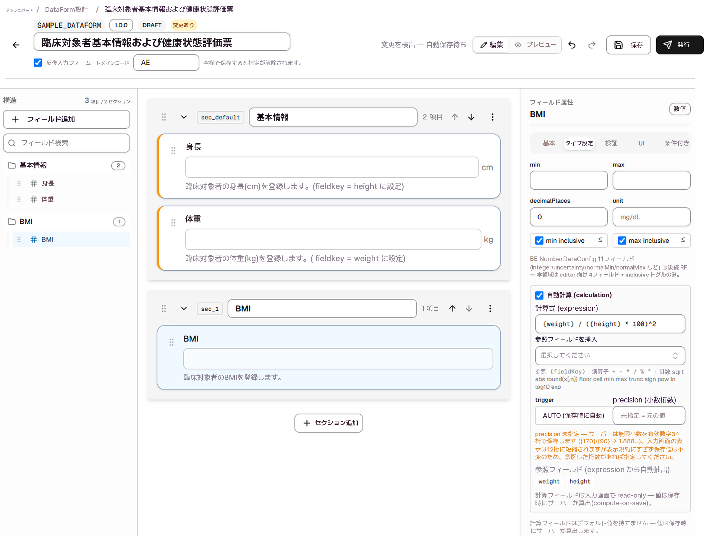
自動計算 (calculation) — 選択すると、下の設定が表示されます。
計算式 (expression) — 参照するフィールドを {fieldKey} 形式で入力します。
参照フィールドの一覧が計算式から自動で抽出されます(weight · height) — 意図したフィールドがすべて表示されているか確認してください。
参照フィールドを挿入 — 同じフォームのフィールドを一覧から選んで計算式に入れます。直接入力しても構いません。
参照先の身長 · 体重フィールドが同じフォーム内にある必要があります。他のフォームの値は参照できません。
注意事項
必須確認 データ破損 · フォーム完了不可
- • ⛔ 計算式は単位を認識しません。身長を
cmで受け付ける場合は、BMI を求めるときに m に換算する必要があります({height} / 100)。換算の向きが間違っていてもシステムはブロックせず、誤った値を黙って保存するため、発行前に実際の値を入れて結果を必ず確認してください。 - • ⛔ 計算に失敗しても保存は成功します。参照フィールドが空である、0 で割るなど計算できない状況では、その欄だけが空の値のまま残り、フォームはそのまま保存されます。結果が空でもエラーメッセージは表示されないため、空の計算結果を定期的に点検してください。
誤解しやすい動作
- • 互いを参照する計算式(循環参照)は、発行段階でブロックされます。参照したフィールドを削除したり fieldKey を変更したりしても、計算式が壊れます。2.1
- • 未測定として宣言されたフィールドを参照すると、結果は空の値になります。参照値がなくなるためです。2.4
3.5自動計算 ② — 計算タイミング · 小数桁数 · 制約
概要
3.4 で入力した計算式をいつ計算するかと結果を何桁で保存するかを決める領域です。この下の案内文は、計算フィールドが通常のフィールドとどう異なるかを説明しています。
画面説明
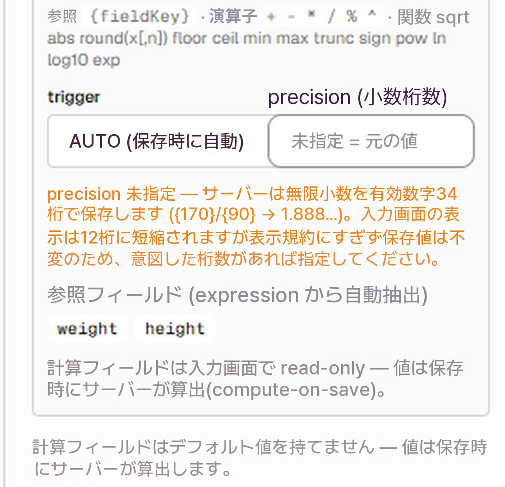
trigger · precision (小数桁数) — AUTO (保存時に自動) は保存するたびに再計算するという意味で、precision を空にすると算出された値がそのまま保存されます。
計算式に使える演算子と関数の一覧が案内されています。(下記「計算式に使えるもの」参照)
⚠ 画面の警告 — precision を空にすると、割り切れない値が非常に長い小数で保存されます。入力画面では短く表示されても保存された値はそのままなので、意図した桁数がある場合は必ず指定してください。
画面の案内 — 計算フィールドは入力画面で読み取り専用であり、同じ理由でデフォルト値を持つことができません。3.6
注意事項
必須確認 データ破損 · フォーム完了不可
- • precision は表示規則ではなく保存規則です。空にしておくと、入力画面では短く表示されても、保存された値には長い小数がそのまま残ります。抽出 · 統計で値が異なって見える原因になるため、臨床的に意味のある桁数を指定してください。
誤解しやすい動作
- • 計算フィールドは入力画面で読み取り専用で、値は保存時に算出されます。ユーザーが入力できない欄なので、必須に指定しても必須集計から自動で除外されます。2.2
- • タイプ設定の decimalPlaces3.3とは別の項目です。decimalPlaces はユーザーが直接入力するときの許容桁数で、precision は計算結果を保存する桁数です。
参考
- • 計算式が長くなると確認が難しくなります。中間値を別の計算フィールドに分けておくと、どこで間違えたかを見つけやすくなります。
計算式に使えるもの
- • 参照
{fieldKey}(同じフォームの他のフィールド) · 演算子+-*/%^(べき乗) · 括弧 - • 関数 —
sqrtabsround(x[,n])floorceilminmaxtruncsignpowlnlog10exp - • 作成例 — 体表面積(BSA · Mosteller):
sqrt(({height} * {weight}) / 3600)· 体格指数(BMI · 身長を cm で受け付ける場合):{weight} / ({height} / 100)^2
3.6デフォルト値 (defaultValue)
概要
新しい入力を開始するときにあらかじめ入力しておく値です。ほとんどの被験者が同じ値を入力する項目で、入力の負担を減らします。
画面説明
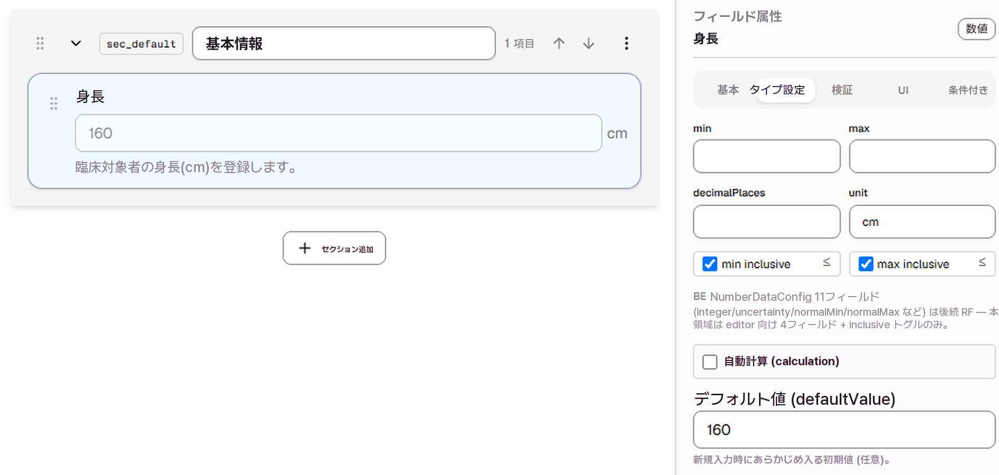
160 — キャンバスの入力欄にあらかじめ入力された状態で表示されるデフォルト値 (defaultValue) — 新規入力時にあらかじめ入る初期値を入力します。(任意)
キャンバスの入力欄に、デフォルト値が入力された状態で表示されます。単位(cm)は右側にそのまま維持されます。
注意事項
必須確認 データ破損 · フォーム完了不可
- • ⛔ 測定値の項目にはデフォルト値を指定しないでください。数値欄にあらかじめ値が入っていると、実際に測定したか確認されていない数値がそのまま保存されます。身長 · 体重 · 検査値のように被験者ごとに異なるべき値では特に危険です。
- • 自動計算と併用できません。計算フィールドの値は保存時にシステムが算出するためです。3.4
誤解しやすい動作
- • デフォルト値は、新しく作成する入力にのみ適用されます。すでに保存されたデータは変更されません。
参考
- • デフォルト値も範囲 · 小数桁数の制限3.2 · 3.3を満たす必要があります。制限に合わないデフォルト値は、保存段階でブロックされます。
- • デフォルト値が有用なのは、プロトコルで固定された数値(例: 投与量 · 標準回次)程度です。
検証タブ — 保存前の値チェック
- 4.1検証規則がない状態
- 4.2規則の追加
- 4.3規則作成完了
4.1検証規則がない状態
概要
保存する前に値が条件に合っているかをチェックする規則をまとめておくタブです。タイプ設定3章の範囲制限より細かい条件を設定したい場合や、違反時に表示する文言を直接決めたい場合に使用します。
画面説明
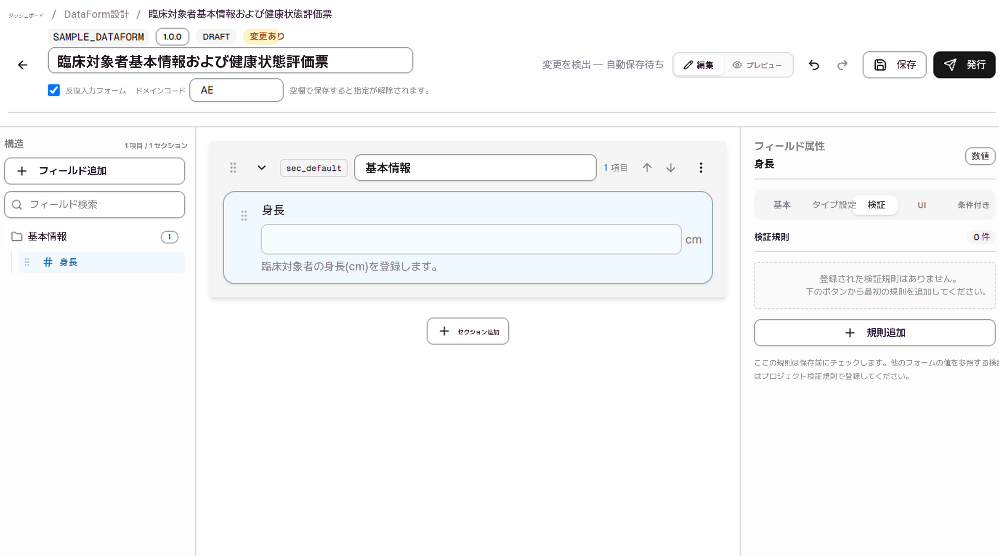
[+ 規則追加] — 最初の規則を作成します。選択した後の画面は 4.2 で説明します。
検証規則領域と、登録された規則数です。最初は 0 件 です。
規則がない場合は、「登録された検証規則はありません。下のボタンから最初の規則を追加してください。」という案内が表示されます。
下部の案内 — 「ここの規則は保存前にチェックします。他のフォームの値を参照する検証はプロジェクト検証規則で登録してください。」
注意事項
必須確認 データ破損 · フォーム完了不可
- • 他のフォームの値を参照する検証は、ここでは作成できません。そのような規則は「プロジェクト検証規則」画面で登録してください。このタブは、同じフォーム内で完結するチェックのみを扱います。
誤解しやすい動作
- • タイプ設定の min · max だけで十分な場合が多くあります。同じ範囲チェックを二か所に重複して設定する必要はありません。3.2
- • 規則は複数作成でき、有効な規則をすべて満たした場合に保存されます。
4.2規則の追加
概要
4.1 の[+ 規則追加]を選択すると、規則 1 ブロックが作成されます。数値フィールドで最もよく使う種類は値の範囲で、タイプ設定の min · max と同じチェックを行いますが、違反時の文言と処理方法を直接指定できます。
画面説明
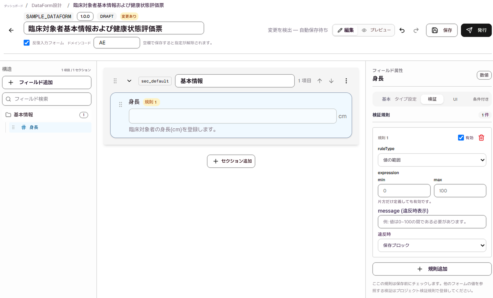
[+ 規則追加] — 規則をもう一つ作成します。(4.1 で選択したのと同じボタンです。)
「規則 1」ブロックが作成され、キャンバスの表示名の横に「規則 1」バッジが表示されます。
規則数が 1 件 に変わります。
有効チェックボックスと削除アイコン — チェックを外すと、規則を削除せずに一時的に停止できます。削除アイコンは、規則を完全に削除します。
ruleType — 規則の種類です。キャプチャは値の範囲を選択した状態です。
min — 範囲の下限です。
max — 範囲の上限です。
薄い文字の 0 · 100 と「例: 値は0~100の間である必要があります。」は入力例であり、設定された値ではありません。画面の案内のとおり「片方だけ定義しても有効です。」
message (違反時表示) — 規則に違反したときに、ユーザーに表示する文言です。
違反時 — 保存ブロックまたは警告から選択します。
注意事項
必須確認 データ破損 · フォーム完了不可
- • message を空欄にすると、ユーザーはブロックされた理由が分かりません。
身長は0~200cmの間である必要がありますのように、許容範囲をそのまま書いてください。 - • タイプ設定の範囲制限3.2とこの規則は、一緒に適用されます。両方を満たした場合にのみ保存されます — 互いに食い違う範囲を指定すると、どの値も保存できなくなるため、片方だけを使用する方が安全です。
誤解しやすい動作
- • 「保存ブロック」は値を修正するまで保存をブロックし、「警告」は知らせますが保存は許可します。生理的に不可能な値は「保存ブロック」、まれだが起こり得る値は「警告」に分けるのが実務上の基準です。
- • [+ 規則追加] を再度選択すると、規則 2、3 … を追加できます。有効な規則をすべて満たした場合に保存されます。
4.3規則作成完了
概要
4.2 の空の項目を入力した状態です。この設定では、200 を超える値を入力したときに保存がブロックされ、指定した文言が表示されます。
画面説明
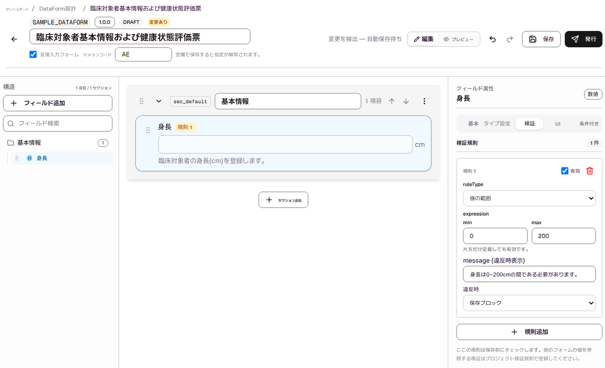
ruleType = 値の範囲 — 数値の大きさをチェックする規則です。
min — キャプチャでは空欄のままの状態です。薄い 0 は入力例にすぎず、設定された値ではありません。
max = 200 — 上限のみを指定しました。
画面の案内 — 「片方だけ定義しても有効です。」 キャプチャのように上限だけを指定しても、規則は正常に機能します。
message = 身長は0~200cmの間である必要があります。 — 違反時にユーザーに表示する文言です。
違反時 = 保存ブロック — 条件を満たすまで保存されません。
注意事項
必須確認 データ破損 · フォーム完了不可
- • ⛔ メッセージと実際の条件が食い違っています。キャプチャの文言は「0~200cm の間」と知らせていますが、min を空欄にしているため、負の値も通過します。下限もブロックするには、min に 0 を入力する必要があります。メッセージは実際の設定と必ず一致させてください — 食い違うと、ユーザーは規則を信頼しなくなります。
誤解しやすい動作
- • 片方だけを指定するのは正常な動作です。ただし、「上限だけを設定するつもりだったのか、下限を入れ忘れたのか」はメッセージを見ると分かります。保存前に二つの欄を合わせて確認してください。
- • 規則を保存した後でも、有効のチェックを外すとすぐに適用が停止されます — 規則を削除せずに一時停止するときに使用します。4.2 ②
参考
- • タイプ設定3章と検証規則4章は一緒に適用されます。範囲制限と検証規則の両方を満たした場合にのみ保存されます。
UIタブ — 画面配置と案内文
- 5.1UIタブの全体構成
- 5.2レイアウト幅
- 5.3読み取り専用 · 非表示
- 5.4placeholder · helpText
5.1全体構成
概要
値そのものではなく、画面にどう配置し、どう案内するかを決めるタブです。このタブの設定は、保存されるデータそのものを変更しません。ただし、非表示は画面上で隠すだけで必須集計からは除外されないため、使用する前に 5.3 を確認してください。
画面説明
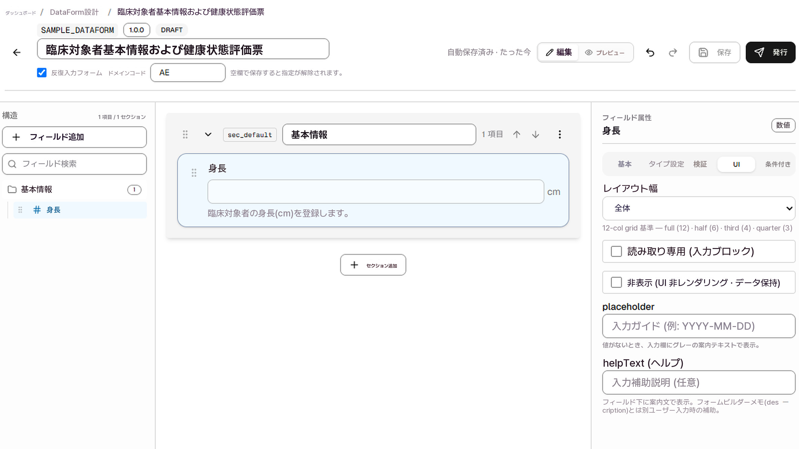
レイアウト幅 — 一行の中でこのフィールドが占める幅です。選択肢の意味は、すぐ下の案内「12-col grid 基準 — full (12) · half (6) · third (4) · quarter (3)」に記載されています。5.2
読み取り専用 (入力ブロック) — 表示はしますが、修正できないようにします。5.3
非表示 (UI 非レンダリング · データ保持) — 画面から隠します。5.3
placeholder — 値がないときに入力欄の中に表示されるグレーの案内です。5.4
helpText (ヘルプ) — フィールドの下に表示される案内文です。5.4
注意事項
誤解しやすい動作
- • 入力欄に薄く表示される
入力ガイド (例: YYYY-MM-DD)·入力補助説明 (任意)は入力例であり、設定された値ではありません。 - • 数値項目は幅を狭めても不便になりません。値が短く、狭い欄でも全体が見えるため、身長 · 体重のように対になる項目を半分の幅で並べて配置すると、フォームが短くなります。5.2
- • 自動計算フィールドは、設定に関係なく入力画面ですでに読み取り専用です。別途指定する必要はありません。3.4
参考
- • デフォルト値はレイアウト幅 = 全体、読み取り専用 · 非表示は解除状態です。
5.2レイアウト幅
概要
一行を12列に分けた12-column grid上で、このフィールドが占める幅を選択します。数値項目は値が短く、狭めても読みにくくならないため、関連する数値を並べて配置してフォームを短くするときに特に効果的です。
画面説明
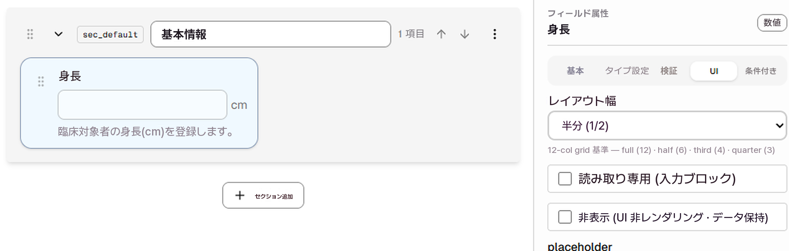
レイアウト幅 — 選択リストから幅を指定します。例は半分 (1/2)です。
キャンバスの入力欄が半分の幅に縮小されます。単位(cm)は、狭くなった入力欄の右側にそのまま付いています。
注意事項
必須確認 データ破損 · フォーム完了不可
- • 範囲表示があるフィールドは、幅を狭めすぎないでください。入力欄の左右に
2.00 ≤ … ≤ 10.00 cmが一緒に表示されるため3.2 · 3.3、欄が狭いと肝心の入力スペースがほとんど残りません。
誤解しやすい動作
- • 幅を狭めると、次のフィールドが同じ行に配置されます。一行の合計が12を超えると、次の行に移ります。
参考
- • 画面幅が狭い端末では、設定に関係なく一行に一つずつ縦に配置されることがあります。
幅の選択肢
| 選択 | 占める列数 | 一行に配置される数 | 適した例 |
|---|---|---|---|
| 全体 | 12 | 1つ | 単独の数値 |
| 半分 (1/2) | 6 | 2つ | 身長 · 体重 |
| 三分の一 (1/3) | 4 | 3つ | 収縮期 · 拡張期 · 脈拍 |
| 四分の一 (1/4) | 3 | 4つ | 検査値のまとまり |
5.3読み取り専用 · 非表示
概要
フィールドを修正できないようにしたり、表示されないようにしたりします。どちらも、保存されたデータはそのまま保持されます。
画面説明
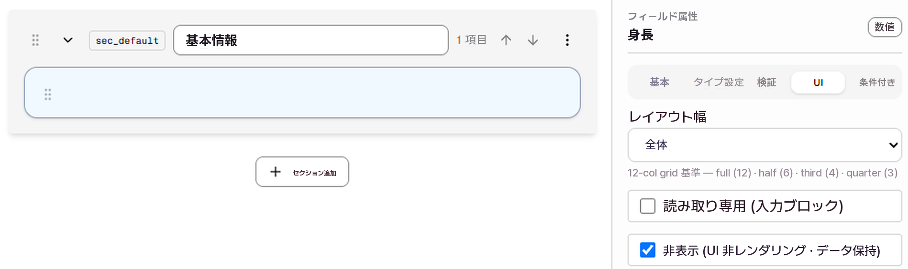
読み取り専用 (入力ブロック) — 値は表示されますが、ユーザーは修正できません。(このキャプチャでは解除状態)
非表示 (UI 非レンダリング · データ保持) — 入力画面に表示しません。すでに保存された値は削除されません。
キャンバスからフィールドが消え、セクションが空に見えます。
注意事項
必須確認 データ破損 · フォーム完了不可
- • ⛔ 必須項目を非表示にしないでください。UIタブの非表示は画面上で隠すだけで、必須集計からは除外されません — ユーザーが入力できない項目が分母に残り、フォームを完了できなくなります。
- • ⛔ 自動計算の参照フィールドを非表示にしないでください。ユーザーが値を入力できなくなり、計算結果がいつまでも空のままになります。3.4
誤解しやすい動作
- • 条件付きタブの非表示とは異なります。条件が合わずに非表示になったフィールドは、必須集計から除外されます6章。同じ「非表示」という表現を使いますが、検証での扱いが正反対なので、区別してください。
- • 読み取り専用と非表示は異なります。読み取り専用は「表示するが修正不可」、非表示は「表示しない」です。計算結果のように値を見せる必要がある項目には、読み取り専用を使用してください。
参考
- • 非表示にしても構造パネルにはそのまま残っています — 再度選択して設定を元に戻せます。
5.4placeholder · helpText
概要
ユーザーに何をどのように入力すべきかを知らせる二つの文言です。表示される位置と消えるタイミングが異なります。
画面説明
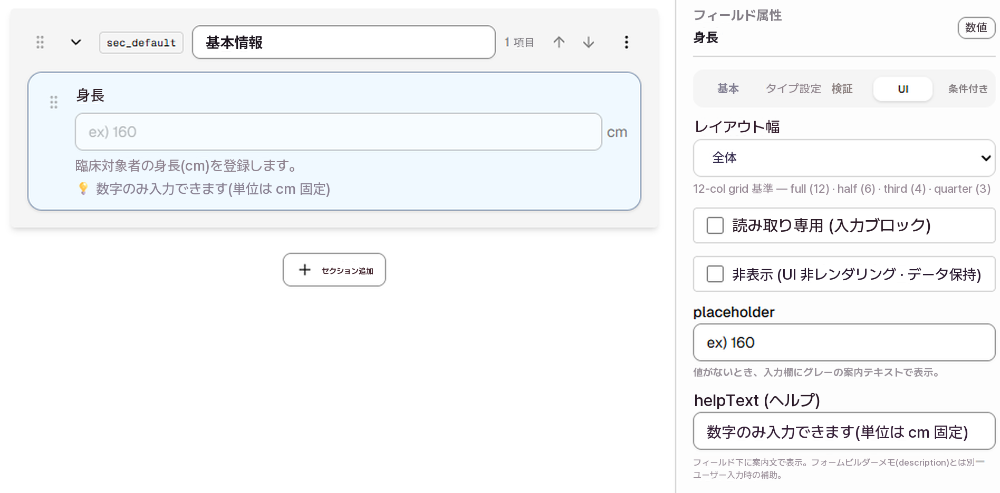
placeholder — 入力欄の中に表示する案内文を入力します。キャプチャは ex) 160 で、期待する桁数と形式を例として示しています。
入力欄の中にグレーで表示されます。ユーザーが入力を始めると消えます。
helpText (ヘルプ) — フィールドの下に表示する案内文を入力します。キャプチャは 数字のみ入力できます(単位は cm 固定) です。
フィールドの下に電球アイコン(💡)と一緒に表示されます。入力しても消えません。
注意事項
必須確認 データ破損 · フォーム完了不可
- • 単位と小数桁数は helpText で知らせてください。キャプチャの「単位は cm 固定」のように書いておくと、ユーザーが m で入力したり、単位も一緒に入力したりするミスを減らせます。placeholder は入力を始めると消えるため、入力中にも見る必要がある案内には適していません。
- • 範囲制限3.2を設定した場合は、その範囲も案内してください。入力欄の左右に範囲は表示されますが、なぜその範囲なのかは helpText でしか伝えられません。
- • description と helpText は別々の項目です。画面の案内のとおり — helpText は「フォームビルダーメモ(description)とは別 — ユーザー入力時の補助」です。両方を入力すると、二行が一緒に表示されます。
三つの文言の違い
| 項目 | 表示位置 | 入力を始めると | 設定場所 |
|---|---|---|---|
| placeholder | 入力欄の中 (グレー) | 消える | UIタブ |
| helpText | フィールドの下 (💡) | そのまま維持 | UIタブ |
| description | 表示名の下 | そのまま維持 | 基本タブ 2.1 |
条件付きタブ — 他の値に応じて表示する
- 6.1条件付き表示の有効化
- 6.2条件の設定
6.1条件付き表示の有効化
概要
他のフィールドの値に応じて、このフィールドを表示したり隠したりする機能です。「事前調査情報の有無 = O」のときだけ数値を入力させるような分岐に使用します。
画面説明
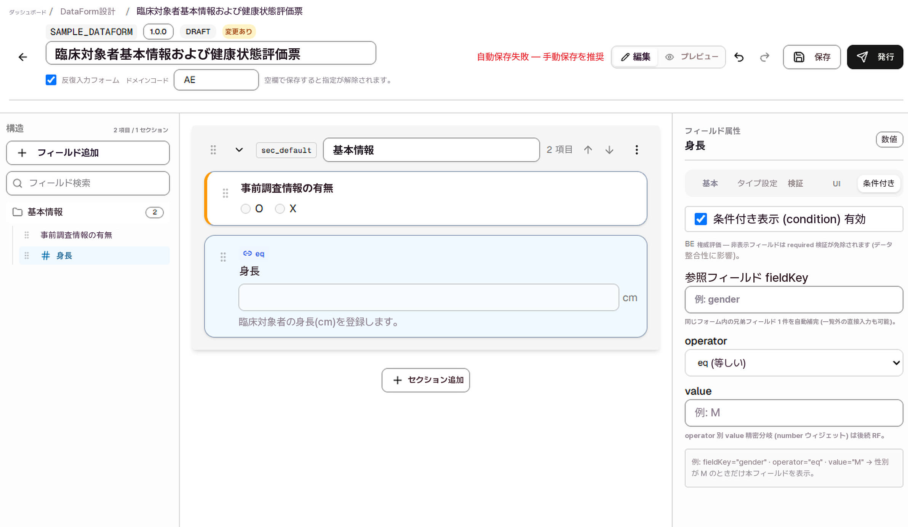
条件付き表示 (condition) 有効 — 選択すると、下の条件設定が表示されます。
キャンバスのフィールドの上に 🔗 eq バッジが表示され、条件が適用されたことを知らせます。
⚠ 画面の案内 — 「非表示フィールドは required 検証が免除されます (データ整合性に影響)。」 条件の判定はシステムが実行します。
参照フィールド fieldKey — 条件の基準となる、同じフォーム内の他のフィールドです。同じフォームの兄弟フィールドが自動補完され、一覧にない値を直接入力することもできます。
operator — 比較方法です。デフォルト値はeq (等しい)です。
value — 比較する値です。
下部の例 — fieldKey="gender" · operator="eq" · value="M" → 性別が M のときだけ本フィールドを表示。
注意事項
必須確認 データ破損 · フォーム完了不可
- • 条件を設定すると、必須検証が免除されることがあります。条件が合わずに非表示になっている間は、そのフィールドが必須でも、空のままフォームが完了します。これは不具合ではなく意図された動作です — 表示されない項目を必須として求めると、フォームを完了できないためです。
- • ⛔ 自動計算の参照フィールドに条件付き表示を設定するときは、注意してください。条件が偽の場合、参照値が空になり、計算結果も空になります。計算フィールドと参照フィールドには同じ条件を設定し、一緒に表示され、一緒に消えるようにしてください。3.4
誤解しやすい動作
- • キャプチャ上部の「自動保存失敗 — 手動保存を推奨」は、自動保存が一時的に失敗したときに表示される案内です。この場合は [保存] を押して、直接保存してください。
参考
- • 条件を有効にして参照フィールドを空欄にすると、条件は成立しません。必ず②~④をすべて入力してください。6.2
6.2条件の設定
概要
6.1 で有効にした条件を最後まで入力した状態です。この設定では、「事前調査情報の有無」フィールドの値が O のときだけ、この数値フィールドが入力画面に表示されます。
画面説明
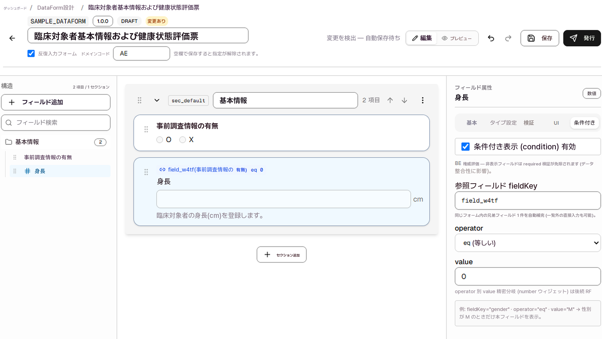
事前調査情報の有無 が O のときだけ表示されるように設定した状態参照フィールド fieldKey = field_w4tf — 同じフォームの「事前調査情報の有無」フィールドを指します。
operator = eq (等しい)
value = O — 画面に表示される文言ではなく、その選択肢に保存される値を入力します。
①~③をすべて入力した結果 — キャンバスのバッジが 🔗 field_w4tf(事前調査情報の有無) eq O に具体化されます。どのような条件かをすぐに確認できます。
参照先の「事前調査情報の有無」フィールドが同じフォーム内にある必要があり、構造ツリーで確認できます。
下部の例 — fieldKey="gender" · operator="eq" · value="M" → 性別が M のときだけ本フィールドを表示。
注意事項
必須確認 データ破損 · フォーム完了不可
- • ⛔ value には、画面の文言ではなく保存値を入力します。選択フィールドを参照するときは、その選択肢の保存値を先に確認してください。誤って入力すると条件が永遠に成立せず、このフィールドが最後まで表示されません。
- • 参照フィールドの fieldKey を変更または削除すると、条件が壊れます。条件は表示名ではなく fieldKey で結び付いています。(2.1 の fieldKey の注意事項と同じ理由です。)
誤解しやすい動作
- • 数値フィールドを参照するときは、値を数値のまま入力します。
1のように書き、範囲比較(大きい · 小さい)が必要な場合は operator を確認してください — eq は完全に等しいときだけ成立します。
参考
- • 条件を使用するとフォームが短くなり、不要な入力が減ります。ただし、条件が互いに衝突すると最後まで表示されないフィールドが生じるため、設定後にプレビューで必ず確認してください。
付録
- 7.1設定項目一覧
7.1数値フィールドの設定項目一覧
タブ別の設定項目
| タブ | 項目 | 何を決めるか | 本文 |
|---|---|---|---|
| 基本 | fieldKey | 値が保存される実際のキー · 計算式が参照する名前 (保存後の変更禁止) | 2.1 |
| label (表示名) | 画面に表示される項目名 | 2.1 | |
| description (ヘルプ) | 表示名の下の補足説明 | 2.1 | |
| 必須入力 | 必ず入力する必要があるか (0 は空の値ではない) | 2.2 | |
| SDV検証対象 | CRA原資料照合の対象か · 検証必須かどうか | 2.3 | |
| AE意味ロール | 有害事象フォームでこのフィールドが意味するもの | ※ | |
| 未測定宣言を許可 | 「測定できなかった」を値として残せるか · 表示ラベル · 表示灯 | 2.4 | |
| タイプ設定 | min · max | 入力可能な範囲 (外れると保存ブロック) | 3.2 |
| min inclusive · max inclusive | 境界値を含むかどうか (選択=以上·以下 / 解除=超·未満) | 3.2 | |
| decimalPlaces | 許容する小数桁数 (0 = 整数のみ) | 3.3 | |
| unit | 入力欄の右の単位表示 (値には保存されない) | 3.3 | |
| 自動計算 | 計算式 · 参照フィールド · trigger · precision (読み取り専用 · デフォルト値不可) | 3.4 · 3.5 | |
| デフォルト値 (defaultValue) | 新規入力時にあらかじめ入力しておく値 (測定値には非推奨) | 3.6 | |
| 検証 | ruleType | 規則の種類 — 数値では値の範囲を主に使用 | 4.2 |
| expression (min · max) | 規則の条件 (片方だけ指定可能) | 4.3 | |
| message | 違反時にユーザーに表示する文言 (実際の条件と一致させること) | 4.3 | |
| 違反時 · 有効 | 保存ブロック / 警告 · 規則の有効 · 無効 | 4.2 | |
| UI | レイアウト幅 | 12-col grid 上の幅 (数値は半分 · 三分の一が有用) | 5.2 |
| 読み取り専用 | 表示するが修正できないように | 5.3 | |
| 非表示 | 画面に表示しない (保存値は保持 · 必須集計には残る) | 5.3 | |
| placeholder · helpText | 入力案内の文言 — 単位 · 小数桁数は helpText で | 5.4 | |
| 条件付き | 条件の有効化 | 条件付き表示を使用するかどうか (必須検証の免除) | 6.1 |
| 参照フィールド fieldKey | 条件の基準となる、同じフォームのフィールド | 6.2 | |
| operator · value | 比較方法と比較する値 (保存値を入力) | 6.2 |
必ず覚えておくこと
必須確認 データ破損 · フォーム完了不可
- • 計算式は単位を認識しません。換算が間違っていてもブロックせず、誤った値をそのまま保存するため、発行前に実際の値で結果を確認してください。3.4
- • 計算に失敗しても保存は成功します。参照値の欠損 · 0 による除算の場合は、その欄だけが空になり、エラーは表示されません — 空の結果を定期的に点検してください。3.4
- • 単位を変更しても、既存の値は換算されません。同じ欄に単位の異なる値が混ざると、元に戻せません。3.3
- • 先頭に 0 が必要な値には数値タイプを使用しないでください。
007は7になります。1.1 - • 検証メッセージは実際の設定と一致させてください。片方だけを指定しておきながら両側の範囲を案内すると、ユーザーが誤解します。4.3
誤解しやすい動作
- •
0は空の値ではありません。未測定と区別するには、「未測定宣言を許可」を使用してください。2.2 · 2.4 - • min · max はブロックの軸です。正常範囲を外れた値に警告だけを出す機能は、この画面にはありません。3.1
参考
- • 保存した後にfieldKey を変更すると、既存データとの結び付きが切れ、計算式も壊れます。2.1
この文書で扱っていないもの
※ AE意味ロール — 基本タブにありますが、設定手順のキャプチャがないため、別の節を設けていません。有害事象(AE)フォームを使用するプロジェクトでのみ指定します。詳しい使い方は、AE 関連の文書を参照してください。
整数のみ · 測定誤差 · 正常範囲 — 数値タイプの内部定義にはありますが、現在この画面では設定しません。正常範囲を外れた値を強調する必要がある検査項目は、検査パネル系のフィールドで設計してください。3.1